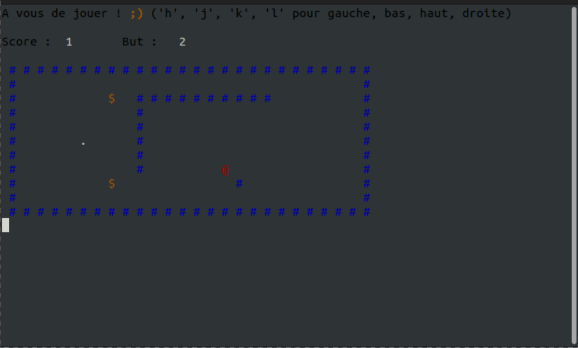
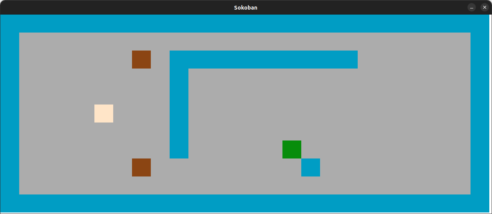
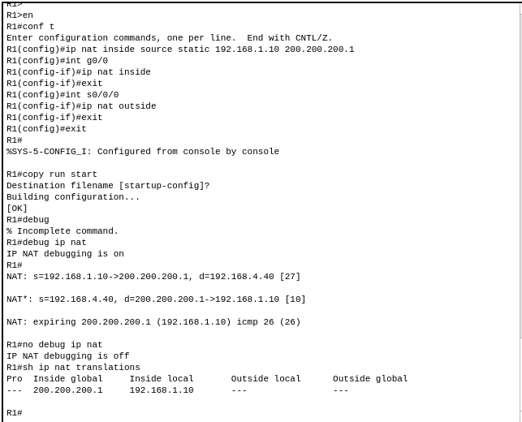
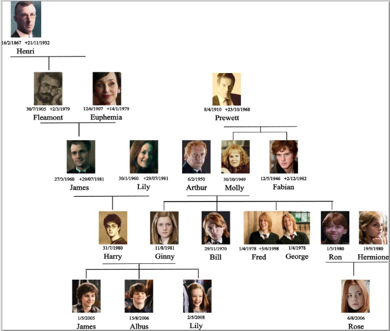
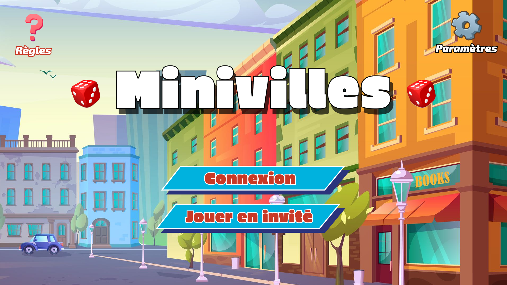
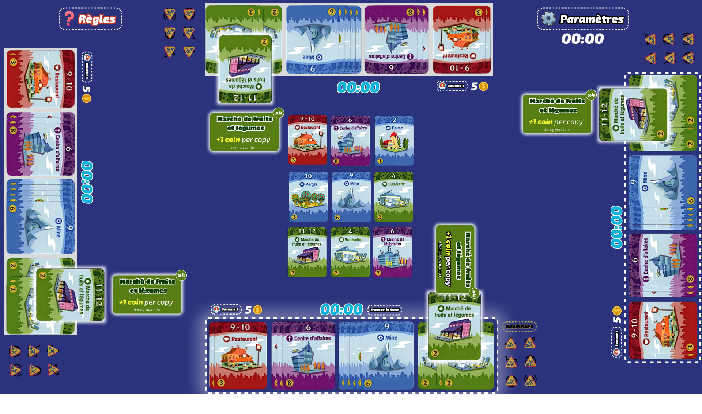

Sokoban - Dev


Sokoban est un jeu de réflexion dans lequel le joueur doit pousser des caisses pour les placer sur des cases cibles. La modélisation de ce jeu a été réalisée ( en C ) avec une interface graphique développée à l'aide de la bibliothèque SDL2, et une option pour jouer directement via le terminal
Git : Code
Réseau IP - Traduction d'adresse IP

Ce projet consiste à réaliser une traduction d'adresses réseaux en utilisant les Protocol IP. Il s'agit de mettre en place un réseau local avec des machines virtuelles et de configurer un routeur pour permettre la communication entre les machines.
Demo : Cliquez ici
Arbre Généalogique - Structure de Données Algorithmiques

Ce projet consiste à modéliser un arbre généalogique en utilisant des structures de données algorithmiques. Il a été réalisé en C avec les Tables, Listes et en implémentant des algorithmes de recherche et de parcours d'arbre avec la recherche dichotomique et la recherche en profondeur.
Git : Code
Minivilles Deluxe


Minivilles Deluxe est une adaptation multijoueur en ligne du jeu de plateau Machi Koro, réalisée comme projet intégrateur universitaire. Techniquement, il repose sur une architecture client-serveur en Godot 4 / GDScript côté serveur headless, avec un backend Flask (Python) et une base MySQL, le tout déployé sur deux VMs OpenStack. Le projet a été réalisé en équipe de 8 personnes.
Git : Code